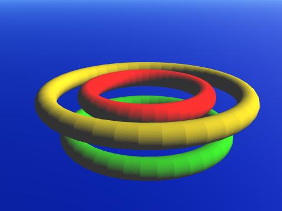
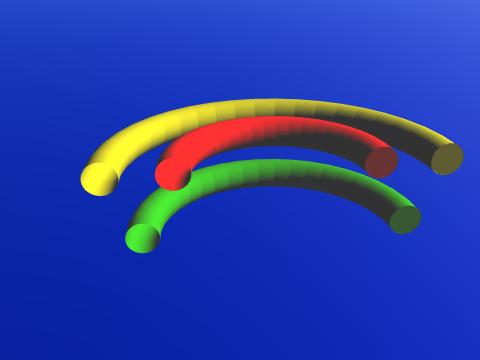
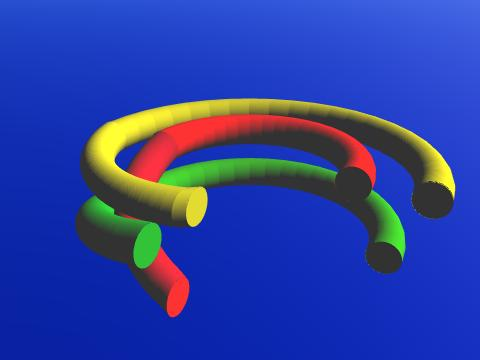
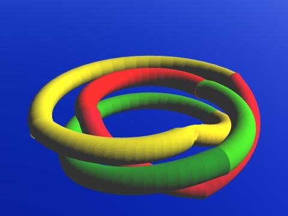

0 degrees

120 degrees
240 degrees
Consider the 3 rings, as shown.
Cut all 3 rings at one location. (I will cut the rings in 2 places in the illustrations and remove one half so that the rest of the construction process is easier to see. You do not really remove half of the rings.)
Now rotate one end of the 3 rings by 120 degrees. (I will add lengths to the 3 rings, twisting these additions.) All rotations will be clockwise, in this example, as seen when looking at the ends to be rotated.
And finally, twist the end of the 3 rings one more time by 120 degrees. Glue the rings back together.
This is the Pattern knot.
0 degrees |
120 degrees |
240 degrees |
Usage Note: My work is copyrighted. You may use my work but you may not include my work, or parts of it, in any for-profit project without my consent.